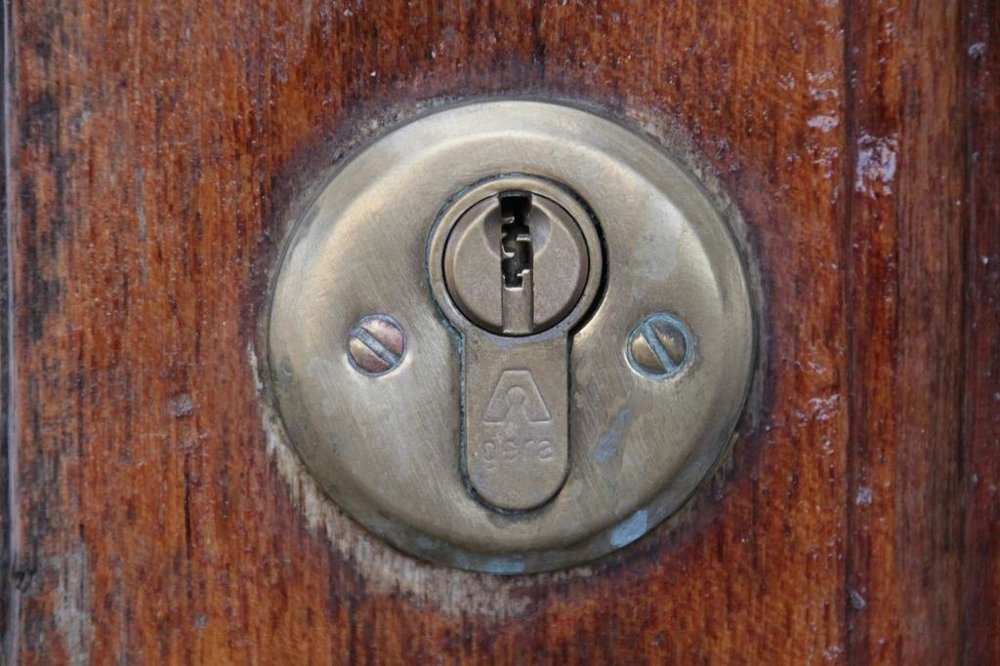
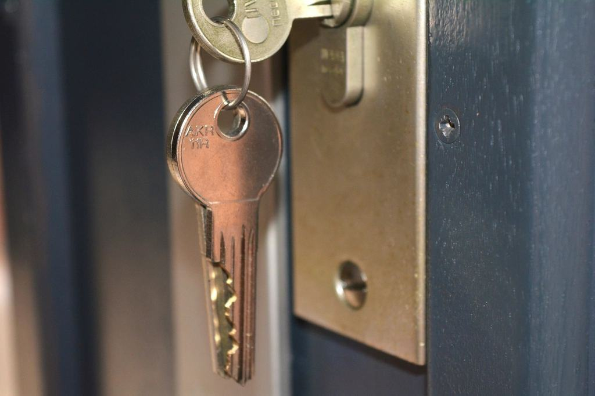
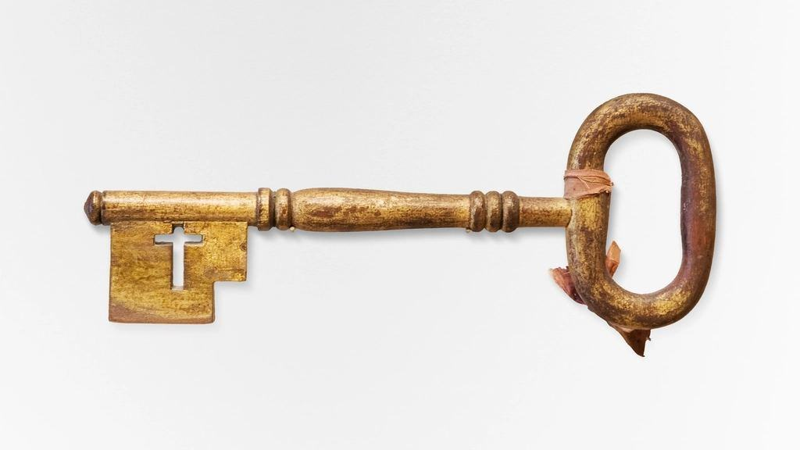
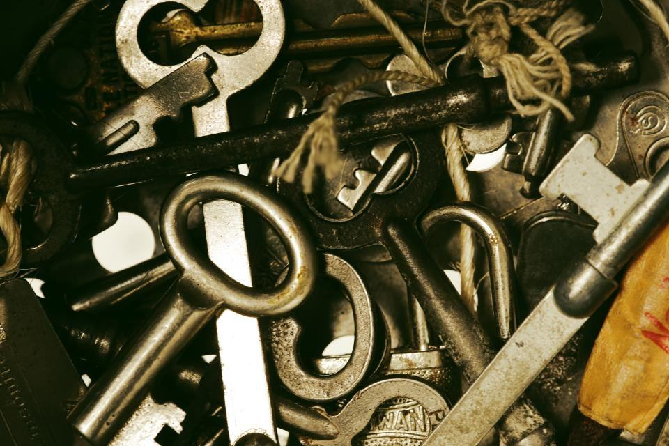
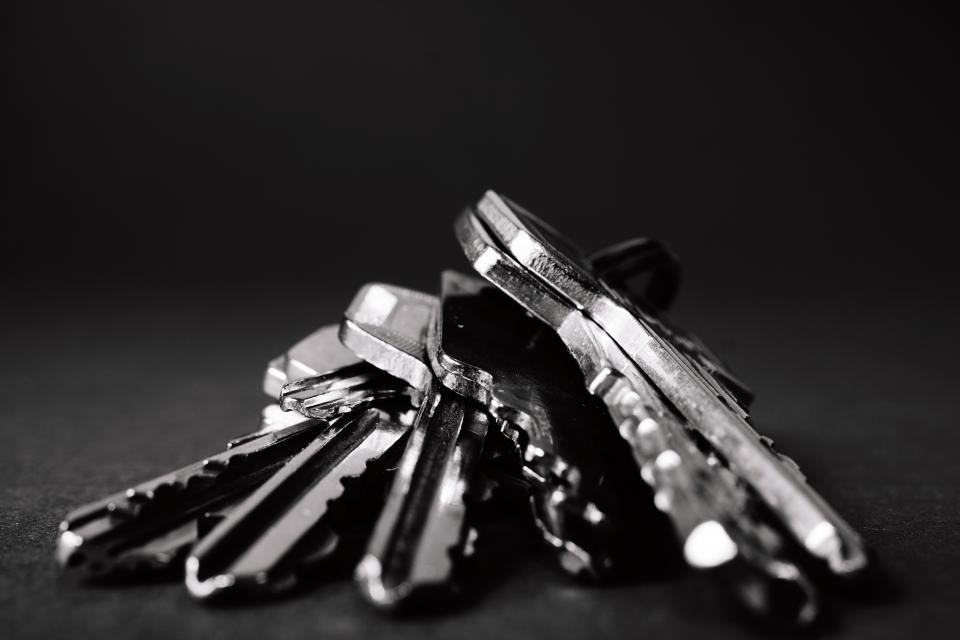

Nycklar för norrskenets gäster
Vi programmerar kortlås till hotell i Kiruna, kodlås till stugbyar längs Torneträsk och nya system till hus som lyfts från gamla stan. Tretton personer, två bilar med vinterverkstad.
Utbildade hos tillverkarna
 01
01Tillverkarutbildade i kortlås
Fem tekniker är utbildade hos de två största tillverkarna av hotellås.
 02
02I SLR sedan 2004
Sveriges Låssmeders Riksförbund sedan 2004, med tre gesäller och en mästare.
 03
03Registrerat elinstallationsföretag
Behörighet hos Elsäkerhetsverket för elslutbleck och uppkopplade läsare.
 04
04ID06 på alla montörer
Krav i stadsomvandlingens byggprojekt, som vi uppfyller sedan 2014.
Hotell, fjäll och stad
- Fem tekniker
Hotellteamet
Programmerar och servar kortlås på hotell och lägenhetshotell, och har jour för avtalskunder under högsäsong.

- Abisko, Björkliden, Riksgränsen
Fjällbilen
En servicebil med verkstad och reservdelar som kör E10 västerut en gång i veckan från december till april.

- Nya centrum
Stadsgruppen
Tre montörer som arbetar med flyttade hus, nybyggda kvarter och nya nyckelsystem i centrala Kiruna.

Vad ska gästerna öppna?
Kortlås för hotell
RFID-kort och mobilnyckel kopplade till ert bokningssystem.
Läs merStugbyar och camp
Kodlås som klarar frost, snödrev och 200 gästbyten per vinter.
Läs merSjälvincheckning
Gästen får koden i ett sms när betalningen har gått igenom.
Läs merLägenhetshotell
Nyckelfria entréer, tvättstugor och förråd i samma behörighet.
Läs merHus som flyttats
Nya lås och justerade dörrar när huset står på sin nya grund.
Läs merSkoter- och skidförråd
Förrådslås som guiderna öppnar med samma kort som rummet.
Läs merSäsongsservice
Genomgång av alla lås i november, före norrskenssäsongen.
Läs merRing Kirunakontoret
Avtalskunder når en tekniker även under polarnatten.
Läs mer
Hotell, stugor och flyttade hus

Flyttat hyreshus, kvarter Malmen

Stugby vid Torneträsk

Hotell vid stationen

Fjällstation

Lägenhetshotell i centrum

Byskola som blev vandrarhem
Fungerar kodlås i stark kyla?
Ja, om de är byggda för det. Vi monterar bara lås med värmda knappsatser och litiumbatterier som provats i vårt frysrum.
Kan låsen kopplas till vårt bokningssystem?
De flesta kortlås vi säljer har färdiga kopplingar till de vanliga hotell- och stugbokningssystemen. Vi kontrollerar ert system innan vi lämnar offert.
Vad händer när ett hus flyttas?
Karmar och trösklar rör sig under transporten. Vi justerar dörrarna när huset satt sig, oftast fyra till sex veckor efter flytten, och byter cylindrar om fastighetsägaren vill.
Kör ni till Riksgränsen och Karesuando?
Ja. Fjällbilen kör E10 varje tisdag under säsongen och Karesuando bokar vi i samråd, med fast resekostnad.
Har ni jour?
Avtalskunder har jour dygnet runt från december till april. Övriga tider vardagar 7–17.
Vad kostar ett kortlås per rum?
Normalt 6 500–9 000 kr per dörr inklusive montering och programmering, beroende på dörr och läsare.
Värdar, chefer och hyresgäster
Vi bytte till mobilnyckel mitt i maj och hade inte en enda stängd våning. Receptionen var utbildad på en eftermiddag.
Paula K.Hotellchef, KirunaGästerna kommer med sista flyget och går direkt till stugan. Jag har inte behövt köra ut en enda natt den här vintern.
Nils-Erik T.Stugvärd, AbiskoHuset flyttades i september. I oktober passade varje nyckel igen och dörrarna stängde utan att vi behövde slå i dem.
Margit L.Hyresgäst, nya centrum
Från polcirkeln i höst
 01/ 03
01/ 03Ett hus på blocklastare
Ett trevåningshus från 1950-talet har körts till sin nya tomt. Vi bytte 36 cylindrar och justerade varje dörr innan hyresgästerna flyttade tillbaka.
Läs mer 02/ 03
02/ 03Stugbyn vid Torneträsk
24 stugor har fått kodlås med självincheckning, så att värden kan sova även när flyget från Arlanda landar sent.
Läs mer
03/ 03Novemberrundan klar
Alla 38 boenden har fått nya batterier och uppdaterade läsare inför norrskenssäsongen.
Läs mer



Turism, gruva och en stad i rörelse
- 38boendenI serviceavtal
- 160husNya lås efter flytt
- 13personerKontor i nya centrum